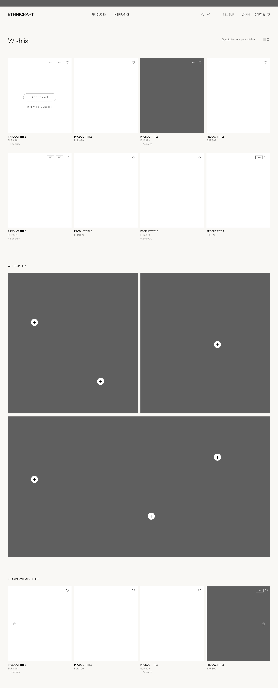
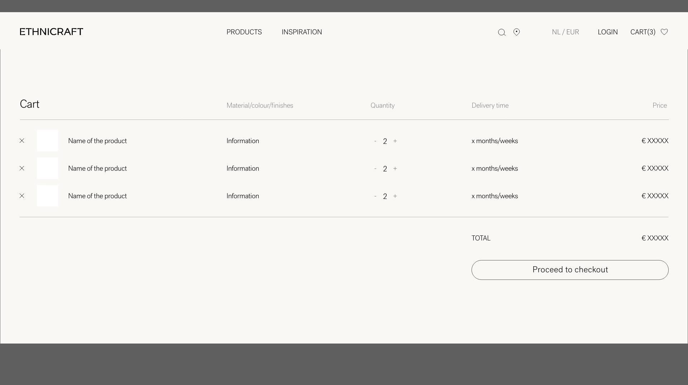

UX
-
01.1P0
Het allereerste wat elke bezoeker ziet, is een formulier — niet de website
- Vóór er ook maar een product, afbeelding of tekst zichtbaar is, verschijnt er een venster dat vraagt om land en taal te kiezen. De website bestaat letterlijk niet totdat je dit ingevuld hebt
- Op een gsm neemt dit venster het hele scherm in — de website is volledig onzichtbaar totdat je het wegklikt
- Dit gebeurt op elke pagina, bij elk bezoek — zelfs wanneer bezoekers rechtstreeks op een Belgische of Amerikaanse pagina terechtkomen waar het land al duidelijk is vanuit het webadres
- Het is het digitale equivalent van een winkelmedewerker die de deur blokkeert en je adres vraagt voor je naar binnen mag
Wat we moeten doen
Het pop-upvenster verwijderen voor bezoekers die al op een landspecifieke pagina aankomen. Het webadres bevat al het land (bv. /en-be/ voor België) — de website weet dus al waar de bezoeker is. Het venster hoeft alleen te verschijnen als iemand de rootpagina zonder landcode bezoekt. Dit is een aanpassing van een paar dagen ontwikkelingswerk.
-
01.2P2
De website heeft drie doelgroepen maar begeleidt geen van hen expliciet
- Ethnicraft bedient drie heel verschillende bezoekers: eindklanten die inspiratie zoeken en naar een winkel willen, retailers die producten bestellen via het partnerportaal, en Contract & Trade professionals (architecten, binnenhuisinrichters) die producten kiezen voor klantprojecten
- De hoofdnavigatie — Indoor, Outdoor, Collaborations — bedient geen van die drie reizen expliciet. Een consument die een winkel zoekt, een retailer die wil bestellen, en een architect die specificaties nodig heeft, landen allemaal op dezelfde pagina
- Het partnerportaal is bereikbaar via een kleine link bovenaan, en productpagina's vermelden het voor professionals — maar de weg van "ik ontdek Ethnicraft" naar "ik ben een ingelogde handelspartner" is niet duidelijk uitgestippeld voor een nieuwe professional
Wat we moeten doen
Duidelijke instappunten in de navigatie voor elke doelgroep. Consumenten hebben een duidelijk pad nodig naar "Vind een verkooppunt". Retailers en C&T-professionals hebben een prominente weg nodig naar het portaal en de registratiepagina. Dit vereist geen volledige herbouw — wel een navigatie- en landingspaginastrategie die de drie doelgroepen erkent en elk verder leidt.
-
01.3P2
De megamenu is goed — maar alle categorieadressen bevatten nog interne systeemcodes
- De Indoor- en Outdoor-menu's hebben degelijke dropdowns met Tafels (5 types), Zitmeubelen, Banken, Opberging, Bureau, Slaapkamer, Accessoires en meer — dat is goed gestructureerd
- Het bevestigde probleem: alle categorieadressen bevatten nog interne databasecodes. De pagina voor eetstoelen heeft in het adresbalk cat_furniture_seating_chairs in plaats van gewoon zitmeubelen/stoelen
- Dit treft elke categorie bij Indoor én Outdoor — adressen zijn onleesbaar, ondeelbaar en moeilijker te begrijpen voor Google
- Twee ontdekkingspaden ontbreken ook: browsen op collectienaam (Bok, PI, Osso, Geometric) en filteren op materiaal (eiken, teak, walnoot)
Wat we moeten doen
Interne categoriecodes vervangen door leesbare URL-namen. Dit is een SAP Commerce-configuratie — elke categorie krijgt een leesbaar alias (bv. /indoor/tafels/eettafels). Correcte doorverwijzingen van oud naar nieuw zorgen dat niets breekt. Voeg apart ook "Ontdek per collectie" en "Ontdek per materiaal" toe als navigatie-instappunten.
-
01.4P3
Je kunt een product nergens online configureren
- Ethnicraft verkoopt meubelen in meerdere afwerkingen, maten en stofoptions — maar niets daarvan is online selecteerbaar voor niet-ingelogde bezoekers
- Een klant die wil weten of de N701 sofa in een bepaalde stof beschikbaar is, moet bellen, e-mailen of het opgeven
- Op het prijsniveau waarop Ethnicraft opereert, verwachten klanten dit online te kunnen samenstellen — Muuto, Vitra en BoConcept bieden dit allemaal aan
- Ingelogde partners zien wél een configurator — de data en techniek bestaan dus al. Die stap ontbreekt voor niet-ingelogde bezoekers
Wat we moeten doen
De productconfigurator ook zichtbaar maken voor niet-ingelogde bezoekers. Materiaal, kleur, afmeting en type kunnen geselecteerd worden. De CTA leidt daarna naar de juiste volgende stap per doelgroep ("Vind een verkooppunt" of "Log in om te bestellen"). De technische fundering (SAP Commerce-varianten) bestaat — het is een Spartacus front-end update.
-
01.5P2
De zoekbalk werkt alleen als je de exacte productnaam al kent
- Typ "grote warme eiken eettafel" — een volkomen normale zoekopdracht — en de resultaten zijn niet bruikbaar
- De zoekfunctie begrijpt alleen exacte trefwoorden, geen omschrijvingen, geen typefouten, geen synoniemen
- Bezoekers die zoeken, kopen 2 tot 3 keer vaker dan bezoekers die browsen. Een gebrekkige zoekbalk kost direct omzet
- Er zijn geen suggesties tijdens het typen, geen "bedoelde je", geen autocomplete
Wat we moeten doen
De huidige zoekfunctie vervangen door een slimme zoektool zoals Algolia. Algolia begrijpt gewone taal, corrigeert typefouten, toont suggesties terwijl je typt en leert van wat bezoekers aanklikken. Er bestaat een officiële koppeling met SAP. De investering verdient zichzelf snel terug.
Partnerportaal
-
PP.1P1
De kortingsdrempels zijn alleen zichtbaar in het winkelmandje — niet terwijl je browst
- Bevestigd vanuit het winkelmandje-screenshot: een duidelijke "Buy more, save more"-banner toont 25% korting tot $10K, 30% tot $20K en 35% daarboven — maar dit verschijnt pas nadat de partner al producten heeft toegevoegd aan het mandje
- Tijdens het browsen weet een partner niet welke kortingsdrempel van toepassing is of hoeveel ze nog moeten bestellen om naar een hogere korting te springen
- Voor een C&T-professional die een groot project plant, zou het kennen van de kortingsdrempel beïnvloeden hoe ze hun bestelling opbouwen — en aanzetten tot grotere enkelvoudige bestellingen
Wat we moeten doen
De persoonlijke kortingsdrempel tonen op productpagina's en in de header voor ingelogde partners. Een kleine permanente indicator — "Jouw huidige korting: 25% — besteed nog €X voor 30%" — geeft partners een echte stimulans om meer toe te voegen tijdens het browsen, niet alleen nadat ze al in het mandje zitten.
-
PP.2P2
Bedrijfsnaam beperkt tot 30 tekens bij het afrekenen — veel echte bedrijfsnamen passen er niet in
- Bevestigd vanuit twee screenshots (afrekenen én adresboek): "Klant- of bedrijfsnaam (max. 30 tekens)" — de bedrijfsnaam is hard beperkt tot 30 tekens
- Veel legitieme bedrijfsnamen — interieurontwerpstudio's, architectenbureaus, projectbedrijven — overschrijden deze limiet
- Een partner die zijn bedrijfsnaam moet afkorten op facturen en leveringsnota's ziet er onprofessioneel uit en zorgt voor administratieve verwarring
Wat we moeten doen
De tekenlimiet van het bedrijfsnaamveld verhogen naar 60–80 tekens. Dit vereist een configuratiewijziging in SAP Commerce's adresmodel — een kleine back-end taak.
-
PP.3P2
Het landveld is leeg bij het afrekenen — ook voor een ingelogde partner met een bestaand account
- Bevestigd vanuit het afrekenen-screenshot: het landdropdown is leeg wanneer een ingelogde partner begint met afrekenen, ondanks het feit dat hun account al landgegevens bevat
- Voor een partner die regelmatig bestelt, is het niet automatisch invullen van het standaard leveringsadres een onnodige wrevel
Wat we moeten doen
Afreken-velden automatisch invullen vanuit het partneraccount en de opgeslagen adressen. Als een partner een standaard leveringsadres heeft opgeslagen, moet het afrekenen dat automatisch laden. Het landveld moet minimaal standaard het land zijn dat aan hun account is gekoppeld.
-
PP.4P2
Bestelgeschiedenis toont totaalbedragen maar geen productdetails — je ziet niet wat er in een bestelling zat
- Bevestigd vanuit het bestelgeschiedenisscherm: de lijstweergave toont bestelnummer, referentie, datum, status, type en totaal — maar geen productnamen, hoeveelheden of SKU's
- Om te zien wat er in een bestelling zat, moet een partner in elke bestelling afzonderlijk klikken
- Voor een professional die meerdere klantprojecten beheert en vroegere bestellingen raadpleegt voor herbestellingen of specificaties, levert dit onnodige klikken op
Wat we moeten doen
Een productsamenvatting toevoegen aan de lijstweergave van de bestelgeschiedenis. Toon de eerste 2–3 artikelen van elke bestelling direct in de lijst, met een "+X meer"-indicator voor grotere bestellingen. Voeg ook een snelle "Herbestel"-knop toe.
-
PP.5P1
De Novelties Hub staat op een volledig andere website — ander domein, ander design
- Bevestigd vanuit screenshot: de contractpartner-resourcehub (catalogi, novelties, stalen) staat op pages.ethnicraft.nl — een volledig ander domein dan ethnicraft.com, en een ander landdomein (.nl vs .com)
- Het design is ook compleet anders: donkergroene achtergrond, witte tekst — een andere visuele taal dan de warme beige van de hoofdwebsite
- Een partner die van de hoofdwebsite naar deze hub navigeert, ervaart een abrupte visuele en contextuele overgang — het voelt als een ander merk
Wat we moeten doen
De Novelties Hub-inhoud integreren in de hoofdwebsite onder een dedicated handelssectie. Op korte termijn: minstens het visuele design van de hub afstemmen op de identiteit van de hoofdwebsite. Op lange termijn: alles onderbrengen op ethnicraft.com.
-
PP.6P2
Een bestelling wijzigen of annuleren vereist het verlaten van het portaal en het indienen van een supportticket
- Bevestigd vanuit de ondersteunings-FAQ: "Je kunt een bestelling niet zelf wijzigen of annuleren via het portaal. Je moet je verzoek indienen via ons Serviceportaal."
- Een partner die een hoeveelheid wil aanpassen of een bestelling wil annuleren, moet naar service.ethnicraft.com gaan en een ticket aanmaken — waarna ze wachten tot een medewerker contact opneemt
- Voor professionals die tijdgevoelige projecten beheren, voegt deze afhankelijkheid van handmatige tussenkomst risico en frustratie toe
Wat we moeten doen
Zelfbedieningsbeheer van bestellingen toevoegen voor orders die nog niet in productie of verzending zijn. Partners kunnen hoeveelheden aanpassen of regels annuleren direct op de bestellingsdetailpagina, met duidelijke statusindicatoren die de uiterste datum voor wijzigingen aangeven.
Design
-
02.1P1
Er zijn 5 navigatievarianten uitgetekend — maar er is nooit een definitieve keuze gemaakt en gebouwd
- De redesign-mockups bevatten vijf uitgewerkte navigatievarianten (Optie 1 t/m 5) die elk een andere aanpak voorstellen voor hoe de megamenu werkt
- Optie 3 is het meest radicaal: Indoor/Outdoor als toptabs, alle subcategorieën (Tafels, Zitmeubelen, Banken, Opberging, Bureau, Slaapkamer, Accessoires) direct zichtbaar in een tweede balk — geen hover nodig, alles meteen bereikbaar
- Optie 1 (meest uitgewerkt) groepeert in drie kolommen: Collecties (Bok, Elements, Boomerang) | Indoor meubelen (met Tafels uitgevouwen) | Outdoor meubelen — plus een lifestyleafbeelding rechts
- De huidige navigatie is functioneel maar volgt geen van deze uitgedachte varianten — het is een tussenvorm zonder duidelijke visuele richting

Navigatieontwerp Optie 1 — collecties, indoor en outdoor in drie kolommen met lifestylebeeld

Navigatieontwerp Optie 3 — alle categorieën direct zichtbaar in de tweede navigatiebalk
Wat we moeten doen
Kies één van de uitgetekende navigatievarianten en bouw die. Optie 1 (met collecties als derde kolom) is het sterkst voor merkidentiteit — het communiceert collectienamen als ontdekkingspad naast producttypes. Optie 3 is het sterkst voor snelheid van toegang. De keuze hangt af van de prioriteit: inspiratie of efficiëntie. Combineer eventueel beide: toptabs Indoor/Outdoor met collecties als extra kolom.
-
02.2P2
Elke pagina ziet er anders uit — er is geen gedeeld visueel rulebook
- Knoppen zien er anders uit afhankelijk van de pagina. Lettertypegrootten variëren onverwacht. De tussenruimte tussen elementen verschilt van sectie tot sectie
- Dit gebeurt omdat er geen gedeeld stijlgids bestaat — geen afgesproken rulebook over hoe dingen er moeten uitzien. Elke keer dat een pagina werd gebouwd of bijgewerkt, nam de ontwikkelaar zijn eigen beslissingen
- Het resultaat voelt samengeraapt in de tijd — wat het ook is
- Dit inconsistentie communiceert onbewust gebrek aan zorg, wat het tegenovergestelde is van wat een premium meubelmerk moet uitstralen

Homepage redesign — consequente typografie, witruimte en componentstijlen doorheen de volledige pagina
Wat we moeten doen
Een visueel rulebook bouwen — één set regels die bepaalt hoe alles op de website eruitziet. Dit omvat kleuren, lettertypes, knopstijlen, ruimteverdeling en hoe elk herbruikbaar element is opgebouwd. Het Spartacus-framework heeft al een CSS-variabelensysteem (--cx-) als basis — dat moet worden uitgebreid tot een volledig systeem en gedocumenteerd in Figma. Eens dit bestaat, ziet elke nieuwe pagina of update automatisch consistent uit.
-
02.3P2
De website had een verlanglijstje — volledig uitgetekend, nooit gebouwd
- De redesign-mockups bevatten een volledig uitgewerkte verlanglijstjepagina: productgrid met hartjespictogrammen, "In winkelmandje"-knop bij hover, "Verwijder uit verlanglijstje", een "Laat je inspireren"-sectie met shoppable lifestylebeelden (+ iconen om producten direct toe te voegen), en een "Dit vind jij misschien ook"-aanbevelingssectie
- Vandaag bestaat dit helemaal niet. Een bezoeker die iets mooi vindt maar nog niet zeker is, heeft geen manier om het te bewaren
- Voor meubelen — waarbij mensen weken nadenken voor ze kopen — is een verlanglijstje bijzonder waardevol
- Voor dealers en architecten is het ook nuttig: een selectie opbouwen voor een project en die later in één keer bestellen

Verlanglijstje — met shoppable inspiratiebeelden en aanbevelingen. Volledig uitgetekend, niet gebouwd.
Wat we moeten doen
Een verlanglijstje toevoegen als ingelogde functie. Het hartjespictogram zit al in de redesign-mockups naast het winkelmandje in de navigatiebalk. Bezoekers die ingelogd zijn kunnen producten bewaren. SAP Commerce ondersteunt verlanglijstjes (saved lists) van nature — het vereist een Spartacus front-end component en het ontsluiten van de bestaande SAP-functionaliteit.
-
02.4P1
Productkaarten tonen niet hoeveel kleur- en materiaalopties er zijn
- In de productoverzichts-mockup zijn duidelijk kleurindicatoren zichtbaar op de productkaarten: "+8 kleuren", "+2 kleuren" — kleine tekst maar grote impact
- Vandaag tonen productkaarten enkel een foto, naam en prijs. Er is geen aanduiding van hoeveel varianten er bestaan — een bezoeker weet pas dat er een donkere eikenvariant bestaat als ze al doorgeklikt hebben
- "+8 kleuren" vertelt de bezoeker meteen dat er keuze is, zonder door te klikken. Dit is een bewezen techniek die de doorklikratio verhoogt

Productoverzicht — met kleurindicatoren, rijke filters en verlanglijstje-hartjes op elke productkaart
Wat we moeten doen
Het aantal beschikbare kleur- en materiaalvarianten toevoegen aan elke productkaart. Dit is een update van het Spartacus-productkaartcomponent dat het variantenaantal uit de SAP-productdata haalt. Combineer dit met de filterupdate (01.3) voor het beste resultaat.
-
02.5P1
Het winkelmandje is druk en complex — de mockup toont hoe eenvoudig het kan zijn
- De huidige ingelogde winkelwagen (bevestigd via screenshot) toont kortingstiers, promotiebanners, upsell-secties, meerdere knoppen, complexe prijsberekeningen en onduidelijke actieknoppen
- De redesign-mockup toont een compleet andere aanpak: een clean, tabelachtige layout met kolommen voor productnaam, materiaal/kleur/afwerking, hoeveelheid (+/-), levertijd en prijs. Eenvoudig, duidelijk, elegant
- Voor een premium meubelmerk moet zelfs het winkelmandje het designniveau van het merk uitstralen — dat doet het vandaag niet

Winkelmandje redesign — clean tabelopmaak met levertijd per product zichtbaar
Wat we moeten doen
Het winkelmandje herbouwen als clean, tabelachtige weergave. Essentie: productnaam, gekozen opties, hoeveelheid, levertijd, prijs. Kortingsinformatie tonen als kleine contextuele indicator, niet als drukke banner. Dit is een Spartacus-componentupdate die prioriteit krijgt samen met de designsysteemopbouw.
-
02.6P1
Wanneer het nieuwe logo klaar is, moet het overal tegelijk veranderen
- Het huidige handgeschreven logo past niet meer bij de richting van het merk
- Het nieuwe typografische logo (in ontwikkeling door Robin en Nancy) moet op hetzelfde moment worden toegepast op elk digitaal aanrakingspunt — niet alleen de websiteheader
- Dit omvat: het favicon (het kleine icoontje in het browsertabblad), de preview-afbeelding wanneer je een link deelt op sociale media, e-mailtempaltes, het partnerportaal en de Novelties Hub
- Een logo dat veranderd is op de website maar nog oud is in e-mails of sociale shares, ziet er slechter uit dan helemaal niet veranderen
- Let op: de ingelogde staat in de mockup toont ook "HI, ROBIN" als gepersonaliseerde begroeting — dit is een kleine maar impactvolle UX-verbetering die ook niet gebouwd is

Ingelogde staat — "HI, ROBIN" met verlanglijstje- en winkelmandjeonaders. Gepersonaliseerde begroeting, niet gebouwd.
Wat we moeten doen
Vóór het nieuwe logo live gaat, een checklist maken van elk digitaal touchpoint. Websiteheader, favicon, Open Graph-afbeelding, alle HubSpot-e-mailtempaltes, het partnerportaal en de Novelties Hub — allemaal tegelijk. Voeg ook de gepersonaliseerde begroeting ("HI, [NAAM]") toe als onderdeel van dezelfde sprint.
-
02.7P3
Designerspagina's waren voorzien als rijke verhaalplatforms — ze bestaan nauwelijks
- De mockup voor Designers & Ateliers is uitgewerkt en ambitieus: per ontwerper een grote foto, biografie, quote, productencarrousel — én een aparte sectie "Ateliers" met een volledige video die vakmanschap toont en emotie oproept
- Vandaag worden ontwerpers vermeld maar niet echt voorgesteld. Er zijn geen video's, geen uitgebreide biografieën, geen eigen pagina die het verhaal centraal stelt
- Ethnicraft werkt samen met ontwerpers over de hele wereld. Dat is een authentiek en onderscheidend verhaal — het wordt nauwelijks verteld
 & ATELIER.png)
Designers & Ateliers — ontwerpersgrid, ateliersvideo en quotes. Uitgetekend, onderontwikkeld.
Wat we moeten doen
Begin klein: kies 3 à 5 sleutelontwerpers en bouw voor hen een volwaardige pagina. Biografie, foto, quote, video (of kwalitatieve fotografie), en een overzicht van hun producten. Test of bezoekers deze pagina's bezoeken en of ze daarna meer producten bekijken. Schaal daarna op naar alle ontwerpers.
Technisch
-
03.1P1
Google bezoekt onze website en ziet een lege pagina — wij hebben dit bevestigd
- We hebben dit rechtstreeks getest: de ruwe HTML van de homepage ophalen geeft enkel
<app-root></app-root>terug — een lege container. Geen productnamen, geen beschrijvingen, geen categorieën - De website is gebouwd op een manier die vereist dat de browser van de bezoeker alle inhoud opbouwt nadat de pagina geladen heeft. Google wacht hier niet op — het leest de pagina zoals die aankomt
- We zijn effectief onzichtbaar in zoekresultaten voor elke product- of categoriezoekopdracht: "massief eiken eettafel België", "ethnicraft bank", "moderne buitenmeubelen" — zoekopdrachten waar we in zouden moeten verschijnen, maar niet kunnen
- Spartacus HAS ondersteuning voor server-side rendering (het is gewoon nooit ingeschakeld)
Wat we moeten doen
Server-side rendering inschakelen op de bestaande Spartacus-setup (Angular Universal). SAP heeft officiële documentatie hiervoor. Dit vereist het opzetten van een Node.js-server die pagina's vooraf rendert. Dit is de hoogste ROI-technische investering die beschikbaar is. Elke andere SEO-verbetering is zinloos totdat Google de pagina's kan lezen.
- We hebben dit rechtstreeks getest: de ruwe HTML van de homepage ophalen geeft enkel
-
03.2P1
Google begrijpt niet wat onze pagina's zijn — hij kan ze dus niet goed weergeven
- Websites kunnen een verborgen informatielaag toevoegen aan elke pagina die Google precies vertelt wat voor inhoud het betreft: "dit is een productpagina voor een massief eiken kruk", "dit is een collectiepagina voor buitenmeubelen"
- We hebben bevestigd vanuit de live website dat deze verborgen informatie volledig ontbreekt
- Wanneer dit WEL aanwezig is, verschijnen zoekresultaten rijker: een correcte breadcrumb ("Indoor > Zitmeubelen > Osso Kruk"), een merkkennispaneel en betere categorisering in afbeeldingszoekopdrachten
- Merken zoals Muuto, Vitra en Hay gebruiken dit correct — zelfs als catalogus-/B2B-merk zonder directe consumentenkassa
Wat we moeten doen
Gestructureerde informatie toevoegen aan elk paginatype zodat Google onze inhoud correct kan categoriseren. Dit dekt: productpagina's (productnaam, materiaal, collectie), categoriepagina's (breadcrumb) en de organisatie zelf (merknaam, hoofdkwartier, website). Dit moet gedaan worden onmiddellijk na het oplossen van de Google-zichtbaarheidsprobleem (03.1).
-
03.3P0
De lijst van al onze pagina's is geblokkeerd — Google kan er niet aan
- Elke website zou een sitemap moeten hebben — een lijst van alle pagina's die Google vertelt "bezoek deze pagina's". Onze sitemap bestaat maar geeft een "Toegang geweigerd"-fout terug. Google kan hem niet openen
- Nieuwe collecties en producten kunnen maanden duren voor ze verschijnen in zoekopdrachten, of nooit gevonden worden
- De oplossing is één technische wijziging — 15 minuten werk
Wat we moeten doen
De toegangsrechten van het sitemap-bestand herstellen. Dit is een instellingswijziging in Amazon S3 — ongeveer 15 minuten werk. Daarna de sitemap indienen bij Google Search Console zodat Google onmiddellijk weet waar hij hem kan vinden. Dit is de snelste winst op de volledige lijst.
-
03.4P2
Dezelfde pagina bestaat in te veel versies — we concurreren tegen onszelf in Google
- Onze website heeft verschillende versies voor verschillende landen en talen. Wanneer Google meerdere versies van dezelfde pagina ziet, splitst het zijn aandacht — waardoor alle versies lager ranken dan ze zouden moeten
- De oplossing is standaard voor internationale websites: je vertelt Google simpelweg welke versie de "echte" is voor elk land
Wat we moeten doen
Tags toevoegen aan elke pagina die Google precies vertellen welke versie bij welk land en taal hoort. Dit is een technische toevoeging aan de websitecode — standaardpraktijk voor internationale websites die volledig binnen de mogelijkheden van ons huidige platform valt.
Snelheid
-
04.1P0
De website begint van nul voor elke bezoeker — niets wordt onthouden tussen bezoeken
- We hebben de technische instellingen bevestigd: de website is geconfigureerd om nooit iets op te slaan of te hergebruiken. Elke bezoeker, elke keer, triggert een volledige heropbouw van de pagina vanuit onze server
- Denk aan een bakkerij die voor elke klant afzonderlijk een brood bakt op bestelling, in plaats van een batch te bakken en daaruit te serveren. Het is trager, het is meer werk, en er is geen goede reden voor
- Google gebruikt websitesnelheid ook als rankingfactor. Een trage website verschijnt lager in zoekresultaten, ongeacht alles andere
Wat we moeten doen
Pagina-caching inschakelen en een content delivery network toevoegen. Caching betekent dat pagina's eenmalig worden opgebouwd en opgeslagen, daarna snel geserveerd aan volgende bezoekers. Een CDN serveert die opgeslagen pagina's vanuit een server dicht bij de bezoeker. We gebruiken dit al voor afbeeldingen (CloudFront) — uitbreiden naar de volledige website.
-
04.2P1
Productfoto's worden op volledige grootte verstuurd naar elk apparaat
- Een professionele productfoto kan gemakkelijk 5–8 megabyte zijn. Een bezoeker op een gsm krijgt hetzelfde enorme bestand als iemand op een groot bureaublad
- Voor een merk waarbij fotografie het primaire verkoopinstrument is, is trage beeldlading zowel een prestatie- als een kwaliteitsprobleem
- Het systeem dat onze afbeeldingen levert (CloudFront) heeft deze optimalisatiemogelijkheid al ingebouwd — het is gewoon niet ingeschakeld
Wat we moeten doen
Automatische beeldoptimalisatie inschakelen voor alle productfotografie. Elk beeld wordt automatisch gecomprimeerd voor sneller laden, omgezet naar een modern efficiënt formaat (WebP), en verkleind naar het scherm waarop het bekeken wordt. De infrastructuur (CloudFront) is aanwezig — enkel configuratie vereist.
-
04.3P0
Alle tekst op de website is onzichtbaar gedurende een seconde of twee terwijl de pagina laadt
- Bevestigd vanuit de live websitecode: alle lettertypen zijn ingesteld om tekst volledig te verbergen totdat het merklettertype volledig gedownload is
- Op een trager mobiel netwerk zien bezoekers even een volledig lege pagina voor er tekst verschijnt. Dit voelt kapot
- De eenvoudige oplossing is tekst meteen te tonen in een standaardlettertype terwijl het merklettertype op de achtergrond downloadt — bezoekers merken de overschakeling nauwelijks
- Dit is een wijziging van één regel code
Wat we moeten doen
Eén instelling wijzigen in de websitecode zodat tekst onmiddellijk verschijnt in plaats van te wachten op het merklettertype. De tekst verschijnt kort in een standaardlettertype (zoals Arial) en schakelt daarna vloeiend over naar Post Grotesk zodra het geladen is. Dit is ongeveer 30 minuten ontwikkelingswerk.
-
04.4P0
Een van onze marketingtools bevriest de volledige website terwijl hij laadt
- Bevestigd vanuit de websitecode: een HubSpot-script is zodanig ingesteld dat de volledige website moet pauzeren en wachten tot het volledig geladen is voor iets aan bezoekers getoond wordt
- Als HubSpot-servers traag zijn, bevriest onze volledige website terwijl ze wachten — iets waar we geen controle over hebben
- Het toevoegen van één woord aan de code — "async" — zou de website inhoud en het HubSpot-script tegelijkertijd laten laden in plaats van na elkaar
- Dit is een reparatie van 5 minuten
Wat we moeten doen
De manier waarop het HubSpot-script geladen wordt aanpassen zodat het de pagina niet langer blokkeert. Één woord toevoegen aan één coderegel. Verplaats tegelijk alle marketingtools (analytics, advertenties, tracking) naar Google Tag Manager zodat het marketingteam ze zelf kan beheren zonder code-implementaties.
Efficiëntie
-
05.1P1
De contenteditor bestaat — maar is beperkt in wat hij laat doen zonder een ontwikkelaar
- We hebben SmartEdit — een tool waarmee het marketingteam bepaalde inhoud op de website kan bijwerken zonder IT te vragen. Banners, tekst en sommige paginacomponenten kunnen rechtstreeks worden gewijzigd
- De beperking: alleen componenten die specifiek gebouwd en bewerkbaar gemaakt zijn in SmartEdit kunnen worden gewijzigd. Alles daarbuiten vereist een ontwikkelaar en een implementatie
- In de praktijk kan het marketingteam bestaande inhoud bijwerken maar geen nieuwe paginalayouts maken, nieuwe soorten secties toevoegen of structurele wijzigingen aanbrengen zonder IT
Wat we moeten doen
De beschikbare bouwblokken in SmartEdit uitbreiden. Bouw een bibliotheek van flexibele, herbruikbare componenten — grote hero-banner, tekst+beeld-blok, producthighlightgrid, promotioneel lint, redactionele sectie — en maak die beschikbaar voor het marketingteam. Eens deze bibliotheek bestaat, kan het team elke campagnepagina onafhankelijk bouwen zonder één regel code te schrijven.
-
05.2P2
Productinformatie staat op te veel plaatsen en raakt frequent niet meer gesynchroniseerd
- De afmetingen, afwerkingen, beschikbaarheid en prijs van elk product zouden op één plaats moeten staan en automatisch naar de website stromen. In plaats daarvan wordt dezelfde informatie bijgehouden in meerdere afzonderlijke systemen die frequent niet meer overeenkomen
- Het resultaat: de website toont producten als beschikbaar wanneer ze het niet zijn, toont ontbrekende afwerkingsopties, of geeft verouderde specificaties weer
Wat we moeten doen
Ons SAP back-end systeem de enige bron van waarheid maken voor alle productinformatie. Alles — namen, afmetingen, afwerkingen, prijzen, beschikbaarheid — moet daar bijgehouden worden en enkel daar. De website haalt er automatisch uit. Externe spreadsheets of afzonderlijke systemen die productdata aanleveren, moeten geauditeerd en geconsolideerd worden.
-
05.3P2
Elke beslissing over de website is een gok — we hebben geen manier om te testen wat werkt
- Wanneer het team een paginatitel verandert, een knop verplaatst of een nieuwe layout probeert — er is momenteel geen manier om te weten of die wijziging hielp of schaadde
- A/B-testen toont versie A aan de helft van je bezoekers en versie B aan de andere helft, waarna je meet welke versie tot meer aankopen of klikken leidt. Het verandert designbeslissingen van meningen in bewijs
Wat we moeten doen
Een A/B-testtool opzetten die het marketingteam zelfstandig kan gebruiken. Tools zoals AB Tasty laten het team versies van een pagina testen via een visuele editor — geen codering vereist. Begin met de meest bezochte pagina's: homepage, collectiepagina's en productpagina's.
-
05.4P1
We tellen bezoekers maar kunnen de vragen die ertoe doen niet beantwoorden
- Basisbezoekersaantallen worden waarschijnlijk bijgehouden, maar de betekenisvolle vragen blijven onbeantwoord: welke pagina's leiden tot aankopen? Waar geven mensen op tijdens het afrekenen? Welke collecties krijgen veel weergaven maar geen verkopen?
- Zonder dit worden alle commerciële beslissingen — wat te promoten, wat te verbeteren, waar te investeren — op intuïtie in plaats van bewijs gebaseerd
Wat we moeten doen
Correcte tracking instellen voor elke betekenisvolle actie die een bezoeker onderneemt. Dit betekent het bijhouden van: welke productpagina's bekeken worden, wanneer iets aan een mandje wordt toegevoegd, elke stap van het afrekenproces, voltooide aankopen en gebruik van de zoekbalk. Presenteer dit in een live dashboard dat het hele commerciële team kan raadplegen.
Onder de motorkap
-
06.1P0
Het interne adres van onze website-motor is zichtbaar voor iedereen die kijkt
- We hebben dit rechtstreeks gevonden in de websitecode: het privé technische adres van het systeem dat onze volledige website aandrijft, is zichtbaar in elke pagina — iedereen kan het zien door rechts te klikken en "Paginabron bekijken" te selecteren
- Dit is het equivalent van het serviceingangadres en de beveiligingscode op het etalageraam van een restaurant plakken
- Het onthult welke softwareleverancier we gebruiken, de naam van ons account en het interne adres van ons handelssysteem — informatie die niet openbaar zou moeten zijn
Wat we moeten doen
Het interne systeemadres doorsturen via een privé Ethnicraft-URL zodat de onderliggende infrastructuur nooit zichtbaar is. In plaats van het volledige technische adres zichtbaar te zijn, verloopt alle communicatie via api.ethnicraft.com — wat we controleren. Dit verbergt de back-end details en voegt een beveiligingslaag toe.
-
06.2P1
Bezoekers ver van Europa wachten langer — de website is alleen snel in de buurt
- De hoofdwebsite wordt geserveerd vanuit een server in West-Europa. Een bezoeker in New York, Singapore of Sydney moet wachten tot data van Europa naar hun scherm gereisd is bij elk laden van een pagina
- Onze productafbeeldingen gebruiken al een globaal netwerk om ze overal snel te serveren — maar de websitepagina's zelf komen nog steeds van één locatie
- Het uitbreiden van dezelfde snelle globale levering naar de volledige website (niet alleen de afbeeldingen) zou de ervaring voor elke internationale bezoeker aanzienlijk verbeteren
Wat we moeten doen
Het bestaande snelle globale leveringsnetwerk dat we al gebruiken voor afbeeldingen uitbreiden naar ook de hoofdwebsitepagina's. De infrastructuur is al aanwezig (CloudFront) — het hoeft enkel uitgebreid te worden naar de website zelf. Dit is een configuratieproject, geen nieuwe aankoop.
-
06.3P0
De cookiemelding voldoet mogelijk niet volledig aan de EU-wetgeving
- We hebben een screenshot gemaakt van de live cookietoestemmingsmelding en vastgesteld dat de Statistieken-categorie standaard ingeschakeld is wanneer de banner verschijnt
- Onder de EU-wetgeving (GDPR) kunnen niet-essentiële cookies — waaronder statistieken en marketingtracking — niet standaard ingeschakeld zijn. Bezoekers moeten actief kiezen om ze in te schakelen
- Als Belgisch bedrijf dat actief is in de EU, is dit een juridische nalevingskwestie. GDPR-boetes kunnen oplopen tot 4% van de jaarlijkse omzet
- De oplossing is een instelling in Cookiebot — geen websitecodewijziging
Wat we moeten doen
Inloggen in Cookiebot en Statistieken en Marketing standaard uitschakelen. Bezoekers moeten actief kiezen om ze in te schakelen. Verifieer ook dat geen analytics- of advertentietools starten voor een bezoeker zijn keuze heeft gemaakt. Controleer de juridische bewoording van de toestemmingsmelding met onze juridische afdeling. Dit moet deze week gedaan worden.
-
06.4P0
Bezoekers op mobiele telefoons kunnen niet inzoomen op de website
- Bevestigd in de websitecode: pinch-to-zoom is uitgeschakeld op mobiele apparaten — bezoekers kunnen fysiek niet inzoomen op enige inhoud
- Voor iedereen die moeite heeft met kleine tekst — wat een aanzienlijk deel van een ouder of visueel beperkt publiek omvat — maakt dit de website moeilijk of onmogelijk te gebruiken
- Dit schendt ook de EU-toegankelijkheidswetgeving, die van kracht is voor privésectorwebsites vanaf medio 2025
- Het verwijderen van deze beperking duurt een ontwikkelaar 5 minuten
Wat we moeten doen
De coderegel verwijderen die zoomen op mobiel voorkomt. Eén instelling, één wijziging, 5 minuten. Dit moet worden gedaan in de volgende code-implementatie ongeacht andere prioriteiten.
-
06.5P1
Wanneer iets kapot gaat op de website, wordt niemand in ons team op de hoogte gebracht
- Op dit moment: als het afrekenen stopt met werken op een bepaald telefoonmodel, als een productpagina crasht, of als een knop niet meer reageert — we komen het alleen te weten wanneer een klant klaagt
- Voor een e-commercesite is een kapot afrekenen dat een werkdag onopgemerkt blijft, significante verloren omzet
- Foutmonitoringtools sturen een onmiddellijke melding met volledige details — welk apparaat, welke browser, welke actie de fout veroorzaakte — op het moment dat een fout meer dan een handvol gebruikers treft
Wat we moeten doen
Een foutmonitoringtool installeren die het ontwikkelteam onmiddellijk waarschuwt wanneer iets kapot gaat. Een tool genaamd Sentry is gratis voor kleine volumes en duurt ongeveer een dag om op te zetten. Het is basisinfrastructuur voor elke live e-commercesite.
-
06.6P1
Marketingtools stapelen zich op zonder overzicht
- We hebben meerdere tracking- en marketingscripts direct in de websitecode gevonden — waaronder HubSpot dat op twee verschillende manieren draait, één waarvan de paginalading vertraagt
- Elke tool die op deze manier wordt toegevoegd, vereist een ontwikkelaar om te wijzigen of te verwijderen — en niemand heeft een volledig beeld van wat er momenteel draait
Wat we moeten doen
Alle marketing- en trackingtools verplaatsen naar één beheersysteem — Google Tag Manager. Dit is een gratis tool waar alle analytics-, advertentie- en trackingtools worden toegevoegd, beheerd en verwijderd via een eenvoudige interface — door het marketingteam, zonder enige ontwikkelaarsbetrokkenheid. Eenmaal geïnstalleerd, beheer je alles ervan voor altijd.
-
06.7P2
De website was ontworpen voor desktop eerst — en dat zie je op telefoons
- De website werd ontworpen met een grote computermonitor in gedachten en daarna aangepast voor een telefoon. Het resultaat is een mobiele ervaring die gecomprimeerd aanvoelt in plaats van ontworpen
- Meer dan de helft van alle websitebezoeken wereldwijd gebeurt op een mobiele telefoon. Google gebruikt ook de mobiele versie van een website als primaire versie voor zoekrankings
- De redesign-mockups tonen al een sterke mobiele visie: schermvullende hero, handgeschreven logo, grote typeface, "ontdek meer"-knop — dit gevoel is er vandaag niet

Mobiele homepage redesign — schermvullend beeld, duidelijke CTA, geen onderbrekingen
Wat we moeten doen
Bij het herbouwen van het designsysteem beginnen vanaf de kleinste scherm en opschalen naar desktop. Start met de belangrijkste mobiele reizen — homepage, collectiepagina, productpagina, afrekenen — en ontwerp ze voor een 390px breed scherm. De redesign-mockups voor mobiel zijn al beschikbaar als vertrekpunt.
-
06.8P2
De website is niet bruikbaar voor iedereen
- Ongeveer 15% van de mensen heeft een handicap die beïnvloedt hoe ze websites gebruiken — visuele beperking, kleurenblindheid, motorische moeilijkheden of het gebruik van hulptechnologieën zoals schermlezers
- Bevestigde problemen: zoomen uitgeschakeld op mobiel (zie 06.4). Verwachte bijkomende problemen: inconsistente alt-teksten op productafbeeldingen, onvoldoende kleurcontrast op sommige tekst-/achtergrondelementen, toetsenbordnavigatie niet volledig getest
- De EU-Toegankelijkheidswet vereist naleving voor privésectorwebsites, van kracht vanaf medio 2025
Wat we moeten doen
Een toegankelijkheidsaudit laten uitvoeren door een specialist. Een auditor test schermlezer-compatibiliteit, toetsenbordnavigatie, kleurcontrast en formulierlabeling voor de belangrijkste gebruikersflows. Begin met bevindingen van hoge ernst. Plan een hertest na de reparaties om naleving te bevestigen.
Investeringsoverzicht
Alle kosten zijn schattingen in euro inclusief bureau- en ontwikkelaarstijd, tools en configuratie. Terugkerende kosten staan apart vermeld. Omzetschattingen gaan uit van een huidige jaarlijkse online omzet van €8–12 miljoen.
| Fase | Wat er opgelost wordt | Timing | Eenmalige kost | Wat het per jaar oplevert |
|---|---|---|---|---|
| P0 Deze week |
Pop-up verwijderen · Tekst laadt zichtbaar · HubSpot-script · Zoom op mobiel · Cookietoestemming fix · Systeemadres verbergen · Sitemap herstellen | 1–2 weken | €3.500–6.000 | Juridisch risico weg. Site laadt sneller. Google vindt nieuwe inhoud. |
| P1 Volgende sprint |
Tracking setup · Caching + snelle levering · Beeldoptimalisatie · Foutmelding · Logo-uitrol · Content editor uitbreiden · Land/taalcodes voor Google · Kortingsdrempel zichtbaar | 1–3 maanden | €40.000–65.000 + €3.000/jaar tools |
+€200.000–400.000/jaar via betere conversie en herstelde navigatiepaden |
| P2 Binnen 6 maanden |
Google-zichtbaarheid fix · Productinfo voor Google · Slimmere zoekfunctie · Visueel rulebook · A/B-testen · Toegankelijkheid · Verlanglijstje · Kleurindicatoren · Designerspagina's | 3–6 maanden | €95.000–140.000 + €4.500/maand tools |
+€700.000–1.500.000/jaar via organisch verkeer en betere UX |
| P3 Strategisch |
Productconfigurator voor iedereen · Navigatievariant bouwen · Mobiel-eerst herontwerp · Volledige merkimplementatie · Designerspagina's uitgebreid | 6–18 maanden | €120.000–180.000 | +€1.000.000–2.500.000/jaar via configurator en betere merkbeleving |
| Totaal (eenmalig + eerste jaar lopende kosten) | €258.500–391.000 | Geschat +€2M–4,5M/jaar bij volledige uitrol | ||
Herbouwen of repareren?
Moeten we repareren wat we hebben, of opnieuw beginnen?
Optie A
De huidige website repareren en verbeteren
- Het SAP-platform is al betaald en werkt betrouwbaar — dat is echte waarde
- Het Partnerportaal is solide en hoeft niet vervangen te worden — het heeft enkel betere zichtbaarheid nodig
- De P0- en P1-fixes leveren reële, meetbare verbeteringen op binnen weken
- Minder verstoring — het team kent het huidige systeem
- Maar: de website werd niet gebouwd om door Google gelezen te worden. Dat repareren op het huidige platform is duur en complex
- En: de ontwikkelaarstool die voor de front-end gebruikt wordt (Spartacus/Angular) is moeilijk om voor te aanwerven en traag om in te bouwen
Optie B
SAP-backend behouden. Alleen de websitefront-end vervangen.
- De SAP-backend (het systeem dat producten, prijzen, bestellingen en het Partnerportaal beheert) is het behouden waard — het werkt
- Alleen wat bezoekers zien vervangen: de front-end website, opnieuw gebouwd op moderne technologie (Next.js) die Google-zichtbaarheid standaard heeft ingebouwd
- Google-zichtbaarheid is van dag één opgelost — geen dure retroactieve aanpassing
- Het designsysteem, de configurator en alle uitgetekende redesign-mockups zijn allemaal veel gemakkelijker clean te bouwen op een nieuwe front-end
- Moderne front-endtechnologie heeft een veel groter pool van ontwikkelaars — sneller te bouwen, goedkoper te onderhouden
- SAP zelf beveelt deze composable aanpak officieel aan voor bedrijven in onze positie
- De SAP-licentie blijft — alleen de front-end verandert
Conclusie
Repareer de dringende zaken deze week. Plan een nieuwe front-end voor 2027.
De website heeft drie fundamentele problemen die samen dagelijks significante omzet kosten: Google kan onze pagina's niet lezen (we bestaan nauwelijks in zoekopdrachten), bezoekers zien een formulier voor ze de website zien (eerste indruk is slecht), en de site is traag en niet gecached (mensen vertrekken voor ze gebrowst hebben). Dit zijn geen cosmetische problemen — het zijn structurele.
De juiste aanpak is twee sporen tegelijk. Repareer de P0- en P1-zaken onmiddellijk — kost €40.000–75.000, reëel rendement binnen 3–6 maanden. Begin tegelijkertijd met het plannen van een nieuwe website-front-end voor een lancering in 2027, gebouwd op moderne technologie waarbij al deze grote fixes — Google-zichtbaarheid, snelheid, mobiel, configurator, uitgetekende mockups — veel gemakkelijker en goedkoper te realiseren zijn.
Besteed geen €250.000 aan het patchwerk van de huidige front-end. De structurele problemen zijn te diep en de technologie te beperkend. De SAP-backend is het behouden waard. De website die de wereld ziet, is dat niet.
De totale potentiële verbetering bij correct uitvoeren: geschat +€2–4,5 miljoen extra jaarlijkse omzet. Bij een totale investering van ongeveer €300.000 betaalt het rendement zich terug binnen 9 tot 18 maanden.